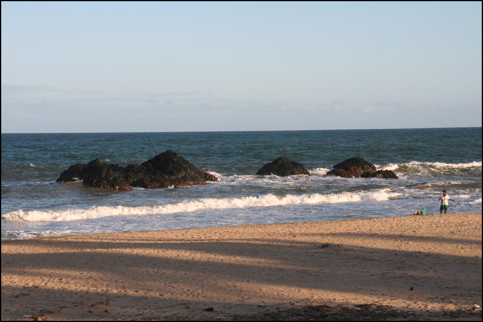

The thing you can do there:
-
At the weekend
You can do a picnic in Ambatolatabatra with friends or family.It is best place for picnic in Mahanoro as it is calm and spacious.what is more! There is a natural rock on the side of the sea, which has shape of a table,which makes it really appealling because it is good for sitting.
Want to eat out?
If you are keen on eating out call it,it is the best restaurant in Mahanoro. Mon desire has a wounderful atmosphere and the food is so crazy as well.